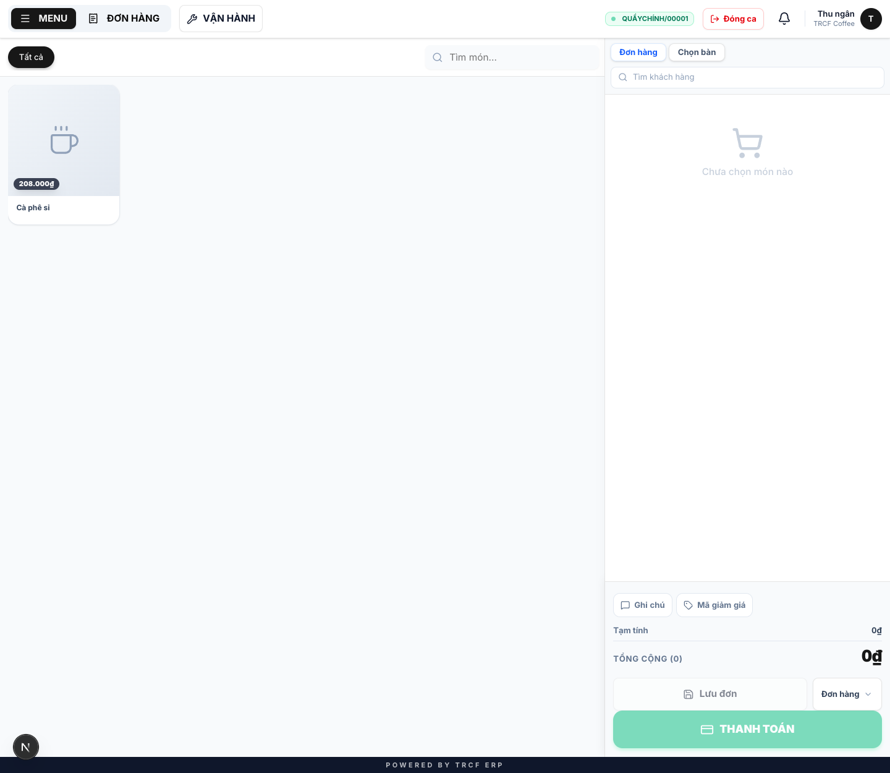
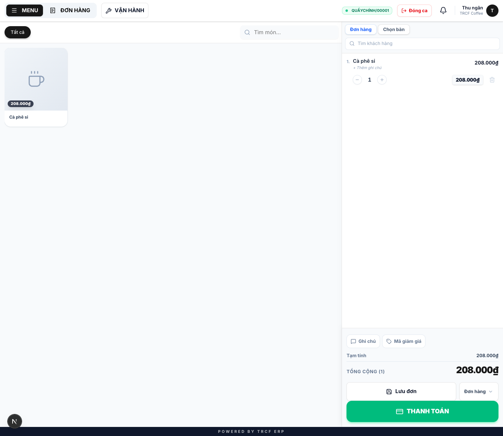
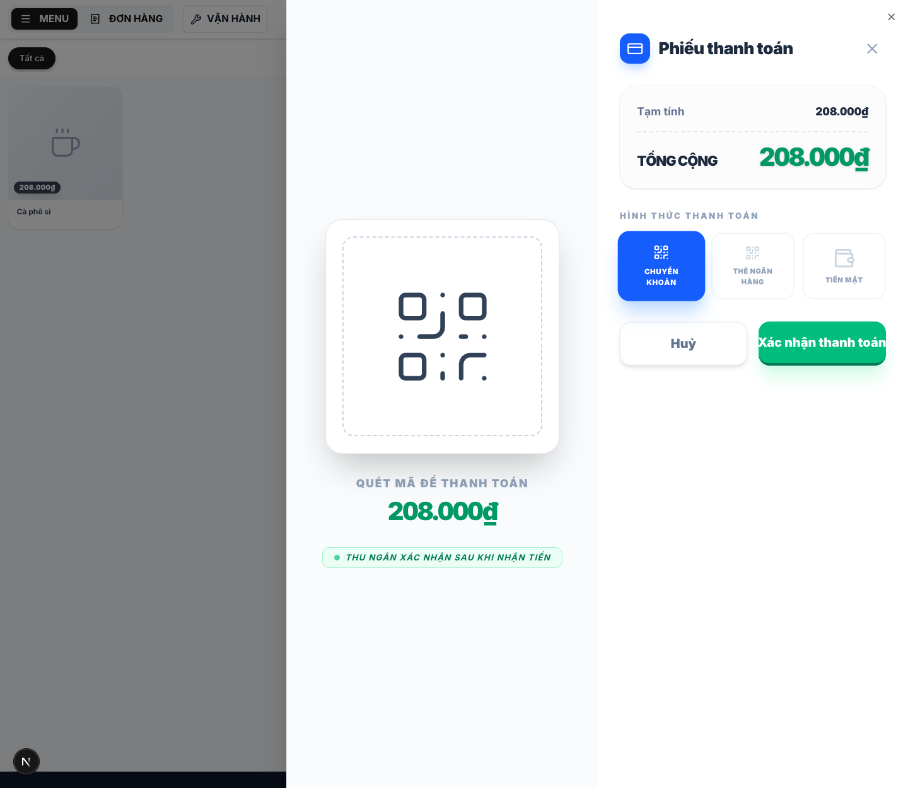

Chương 5 · Quy trình bán hàng tại quầy
5.1 Hướng dẫn mở phiên và bán hàng
1. Đường dẫn vào chức năng
Menu trái: Thiết lập cửa hàng → POS → nút Đã đóng trên dòng quầy (địa chỉ /pos-app?pos=1).
2. Ví dụ nền và các bước thực hiện
Ví dụ: thu ngân "Quản lý" mở ca ở "Quầy chính", két có "500.000" tiền mặt, bán 1 ly.
- Ca được đặt mã dạng "QUẦYCHÍNH/00001".
- Món bán: "Cà phê sỉ", giá "208.000₫".
Bước 1Mở ca
- Vào Thiết lập cửa hàng → POS, bấm nút Đã đóng của quầy.
- Hộp MỞ CA BÁN HÀNG hiện ra.
- Quầy bán hàng: giữ "Quầy chính".
- Thu ngân: đã điền sẵn tên bạn, không đổi được.
- Đếm tiền mặt thật trong két.
- Tiền mặt đầu ca: nhập "500000".
- Bấm BẮT ĐẦU CA.

Bước 2Làm quen màn bán hàng
- Thanh trên cùng có mã ca "QUẦYCHÍNH/00001" và nút Đóng ca.
- Có 3 mục: MENU, ĐƠN HÀNG, VẬN HÀNH.
- Bên phải: giỏ hàng, hai tab Đơn hàng / Chọn bàn.
- Bên trái: các món để bấm chọn.

Bước 3Lên đơn
- Bấm MENU, chọn nhóm món hoặc gõ vào ô Tìm món.
- Bấm món "Cà phê sỉ" để thêm vào giỏ.
- Chỉnh số lượng bằng nút − / +.
- Yêu cầu riêng của khách: bấm Ghi chú.
- Có mã khuyến mãi: bấm Mã giảm giá.
- Khách quen: gõ số điện thoại vào ô Tìm khách hàng để tích điểm.

Bước 4Thanh toán
- Bấm THANH TOÁN.
- Hình thức thanh toán: chọn "TIỀN MẶT", "CHUYỂN KHOẢN" hoặc "THẺ NGÂN HÀNG".
- Kiểm tra số tiền ở Phiếu thanh toán.
- Nhận tiền xong: bấm Xác nhận thanh toán.
- Chưa thu tiền (khách còn ngồi): bấm Lưu đơn ở màn bán hàng.

3. Giải thích các trường
Mở ca
| Trường | Điền gì |
|---|---|
| Quầy bán hàng | Quầy bạn đứng |
| Thu ngân | Tự điền theo tài khoản đăng nhập, không sửa |
| Tiền mặt đầu ca | Số tiền đếm thật trong két lúc này |
Bốn mục trên màn bán hàng
| Mục | Dùng để |
|---|---|
| BÀN (tab Chọn bàn) | Sơ đồ bàn: bấm bàn để gắn đơn vào bàn đó |
| MENU | Danh sách món để bấm chọn |
| ĐƠN HÀNG | Các đơn đã lưu, đang chờ xử lý |
| VẬN HÀNH | Nghiệp vụ kho phát sinh trong ca → mục 5.3 |
Hai loại chip khi chọn món
| Chip | Là gì | Đổi giá |
|---|---|---|
| 🟩 Xanh | Biến thể (size) | ✅ Có |
| ⬜ Xám | Ghi chú pha chế (ít đá, ít đường) | ❌ Không, chỉ ghép vào tên món trên bill và màn bếp |
Ghi chú pha chế mặc định không chọn gì. Bấm lần nữa để bỏ chọn.
Hai nút thanh toán
| Nút | Kết quả |
|---|---|
| Lưu đơn | Giữ đơn lại, chưa thu tiền (khách còn ngồi, gọi thêm sau) |
| THANH TOÁN | Chọn phương thức, xác nhận thu tiền |
Ngay khi thanh toán, hệ thống làm đồng thời 4 việc trong cùng một lần:
- Trừ nguyên liệu trong kho theo công thức.
- Ghi tiền vào sổ quỹ theo phương thức đã chọn.
- Cộng điểm cho khách (nếu có gắn khách).
- Đẩy món sang màn hình bếp.
4. Lưu ý quan trọng
⚠️
Đếm tiền đầu ca cho đúng.
- Đây là mốc để cuối ca tính "đáng lẽ két phải có bao nhiêu".
- Nhập đại thì cuối ca chênh lệch mà không biết lỗi ở đâu.
⚠️
Đơn đã thanh toán không sửa được món, mã giảm giá hay điểm.
- Tiền đã ghi vào sổ quỹ mà sổ quỹ không sửa được.
- Thêm một ly sau khi thu tiền sẽ làm số trong sổ khác số thực thu.
- Khách gọi thêm: lên đơn mới.
⚠️
Một quầy chỉ có một ca đang mở.
- Người thứ hai bấm Mở ca cùng quầy sẽ bị báo lỗi.
- Chặn có chủ đích.
⚠️
Không đổi được phương thức thanh toán sau khi đã thu tiền.
- Đối soát cuối ca dựa vào phương thức đã ghi.
⚠️
Khách trả lại hàng: dùng Hoàn đơn, đừng sửa đơn cũ.
- Hoàn đơn trả hàng vào kho, trả tiền trên sổ quỹ.
- Hoàn hết thì trả lại cả điểm lẫn lượt dùng voucher.
💡
Vì sao không chọn được thu ngân khác: ca là chứng từ đối soát két, người mở ca chịu trách nhiệm phần tiền trong ca. Mở ca đứng tên người khác thì lúc thiếu tiền không truy về ai.